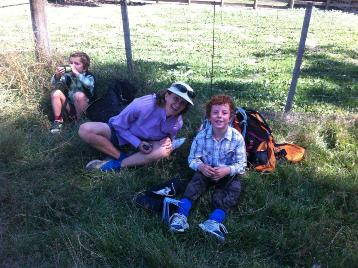
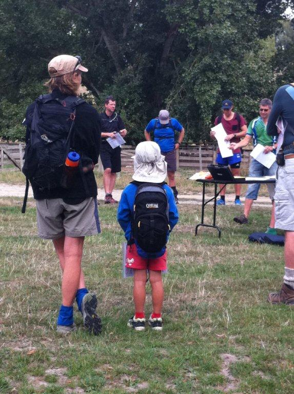
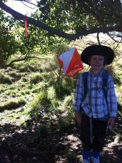
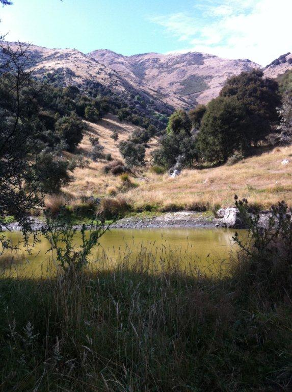

|
'A Rogaining Family' by Mondo Kopua Kings Heist Rogaine Marlborough Orienteering Club Saturday 23rd February 2013 |

The Marlborough Orienteering Club’s President Peter Hamill was keen to plan a rogaine and had scoped out a few areas over the past few months and finally settled on an area up the Waihopai Valley.
Having only one landowner made for easy discussions and access. It never ceases to surprise us how accommodating and generous farmers/landowners are in allowing us access to their properties. Once they get to see what a rogaine is they get quite enthusiastic even to the point of offering transportation around to check areas, put out controls etc.
Peter has competed in several rogaines over the years and had a good idea of some key things to consider during his planning and course setting. Studying aerial photos, topo maps and visiting the area a couple of times he settled upon some nice ‘down’ country with the map covering 11km2, 36x controls with a total value of 1880 points.
42x people turned up at the start to overcast conditions that would soon burn off to allow the sun to warm things up considerably. After some quick route planning and a brief briefing people set off in three directions which for a 3Hr event was a promising start.

I was taking my 6 year old son Angus out with me while my wife Lisa took our other son Fletcher (4 ½ years) out with her. Our aim was to treat the rogaine as a walk and to introduce the boys to rogaining. Surprisingly they displayed no nervousness and were keen to get on with it and get out there. We chose a conservative route, opting to stay low and close to the Start/Finish should we need to make a bee line home.
Soon after the start and heading to our 2nd control Angus was asking about where everyone else was, would the cows charge us and would we see Fletcher and Mum! Spotting the controls would bring a jog out in him and reading the control codes out to me while I wrote them down was good team work I told him.
As the sun got hotter we decided to find any shade we could. Several times I asked if we should stop for a rest but he wanted to keep going, only stopping twice for some relief in the shade while I popped around the corner for the control (just within the permitted rules). He was eager to keep moving even eating and drinking as we walked.

We saw a few people at our halfway point and towards the end he spotted Mum and Fletcher from a distance and ran off to see how they were going. After a brief catch up we set off again for the sweep back home. A wee piggy back up a hill had him encouraging me to go faster but I was puffing hard having to step over fallen branches and young felled pine trees. At our last planned control we realised we had 15 minutes to spare so I put it to Angus if we should get one more control and he was up for it saying that it wasn’t far to go.
A couple of teams were casting about for the control but we carried on past them and once we spotted it we quickly grabbed it and then Angus started running back towards the finish. We got back with 3 minutes to spare. He was puffed but excited about what we had just done. Mum and Dad were very proud of both the boys. We’re all looking forward to the next 3Hr rogaine. (On the drive home they talked and laughed non-stop – whew!).

At the finish everyone congregated in the shade and around the BBQ where Peter had donned the chefs apron and wielding the cooking utensils and doing a great job of serving up tasty food plus cool and refreshing drinks.
Stories and routes were shared and compared. People were unable to locate a couple of controls but no complaints as other people did navigate to them.
Once people tallied up their own scores (later checked by Peter) the overall winners were the Open Mixed team from Nelson of Robyn Dunmore and Brent Edwards who remarkably managed to collect all the controls with 1 minute to spare! (Brent was using the event as training for the GODZone where he is competing in Team Macpac).
People were very pleased with the event, terrain and left satisfied with their outing.
Well done to Peter for setting a great course within a small area on some very scenic farmland. Good allocation of scores to controls to provide strategic choices.
While out on the course, during the drive home and looking at maps + aerial photos I reckon there is potential for a 6 – 12 hour rogaine……….
Mondo